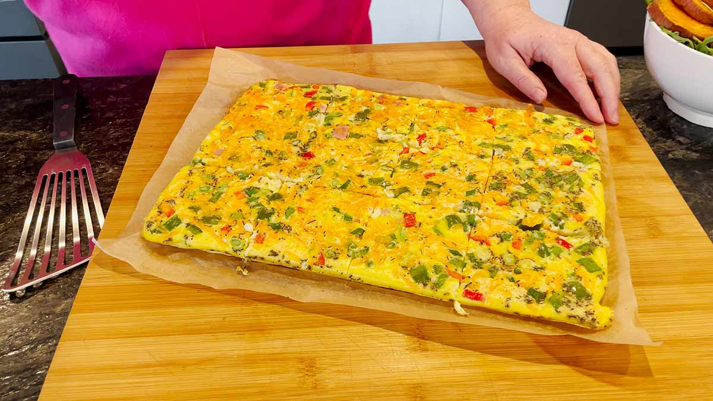

Omelette Recipe

Description
Sheet pan eggs are a quick and easy way to cook a lot of eggs at once. The results are similar to a frittata or a thick omelet, making them especially good for piling on bagels or toast. There are a few big pluses to baking eggs in the oven: there's minimal prep, you don't have to stand around to watch them cook, they can feed a crowd, take care of your meal prep for the week, and they're versatile.
ingredients
- Cooking spray or vegetable oil/butter to grease pan
- 18 large eggs
- 1/2 cup milk , or non-dairy alternative
- 1 1/4 teaspoons kosher salt
- 1/2 teaspoon ground black pepper
- 1 cup shredded cheddar cheese , or shredded cheese of your choice
- 1/2 cup bell pepper, diced small
- 1/4 cup onion, diced small
Steps
- Gather the ingredients.
- Preheat the oven to 375 F. Use cooking spray to generously grease a rimmed half sheet pan, approximately 18-x 13-inches.
In a large mixing bowl, combine the eggs, milk, salt, and pepper. Beat with a whisk until all of the eggs are broken up and the mixture is a uniform yellow color.
- Carefully pour the egg mixture into the prepared sheet pan. If using, sprinkle the cheese over top followed by the peppers and onions.
- Bake just until the eggs are cooked through in the center, about 15 minutes.
- Let cool for a few minutes in the pan. Use a sharp knife to cut into 12 squares. Enjoy!